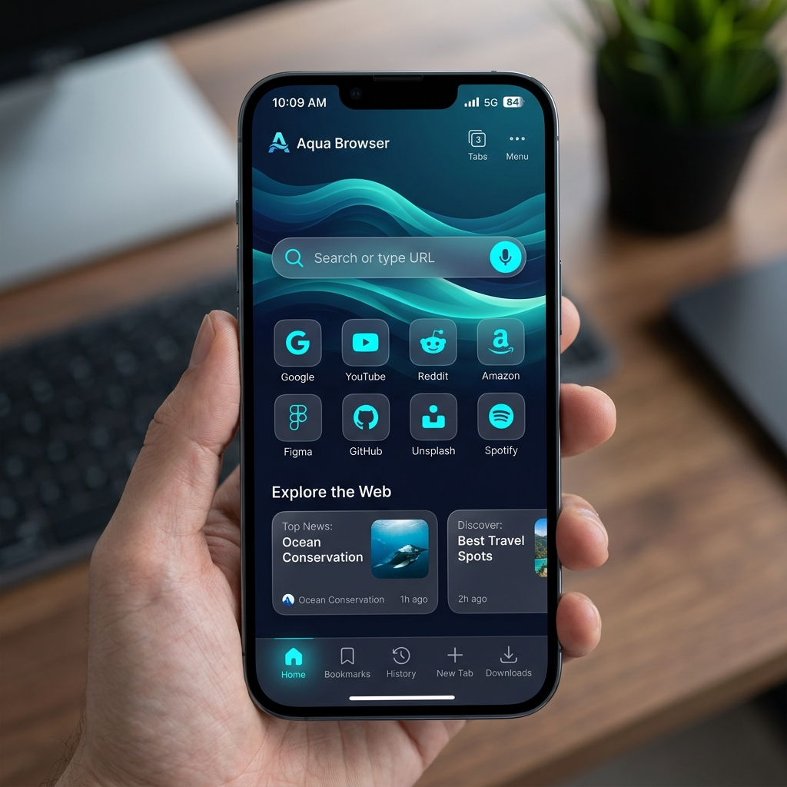
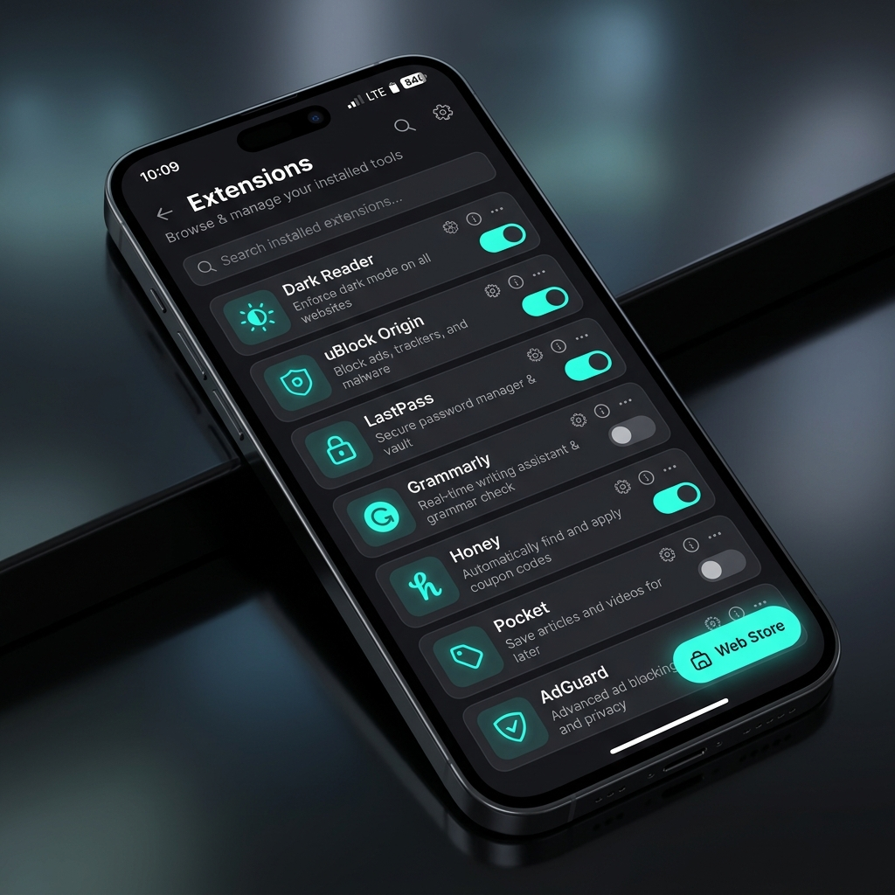

Aqua Browser is the ultimate Android web browser. Powered by a custom-compiled Chromium engine to support full desktop extensions, themes, and developer tools.


We didn't just build an Android app. We rebuilt the Chromium engine to unlock restrictions.
Install uBlock Origin, Grammarly, Dark Reader, and thousands of other extensions directly from the Chrome Web Store.
Download Chrome themes. Our engine parses the manifest and dynamically recolors the entire Android UI to match.
Inspect Element on your phone. View the DOM, Network tabs, and Console logs right from your mobile screen.
Aqua Browser is not a simple WebView wrapper. It is a full fork of the Chromium C++ source code. We apply highly specialized GN compiler patches to force-enable the Extension system natively on Android.